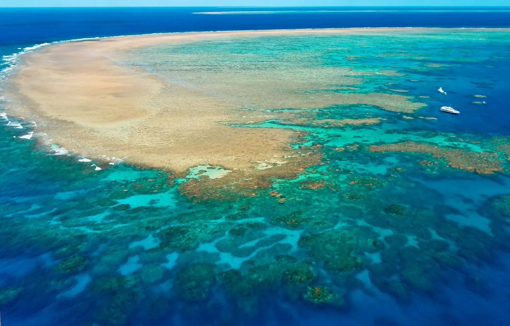

🖼️ Gallery



ℹ️ About
Welcome to Gallery ni John Lloyd H. Santiago
Aking Website About Nature Of World Such A Beautiful Place. Kung gusto mo ng magandang tanawin, magandang lugar, magandang kalikasan, magandang kapaligiran, magandang paligid, magandang mundo, magandang buhay, magandang araw, magandang gabi, magandang umaga, magandang hapon, magandang tanghali, magandang gabi-gabi, magandang araw-araw, magandang taon-taon, magandang buwan-buwan, magandang linggo-linggo, magandang oras-oras, magandang minuto-minuto, magandang segundo-segundo.📞 Contact
Feel free to reach out to me at:
- Email: joha.santiago.au@phinmaed.com
- Phone: 01-2526-050490